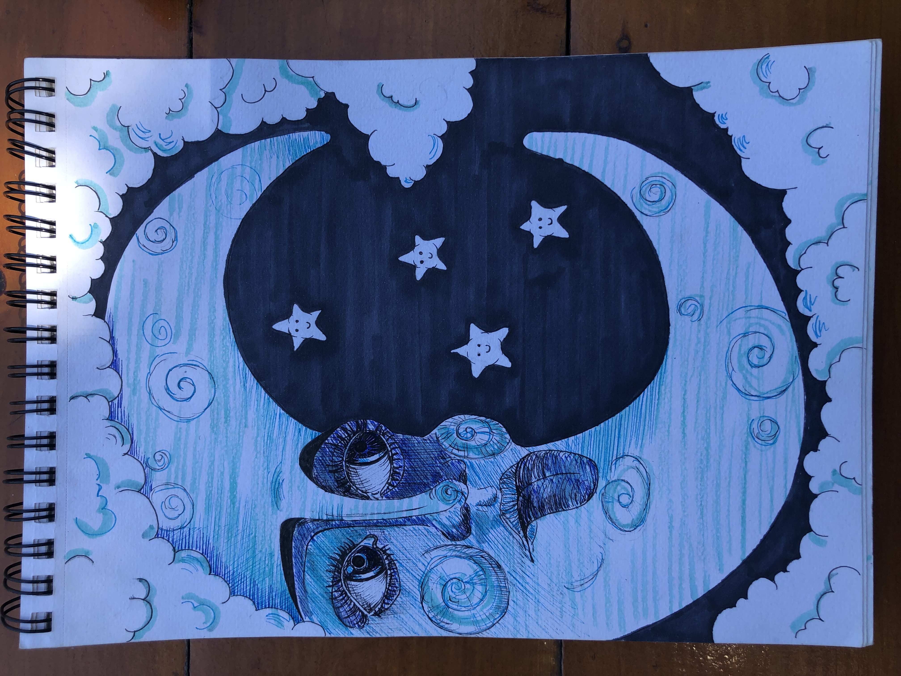
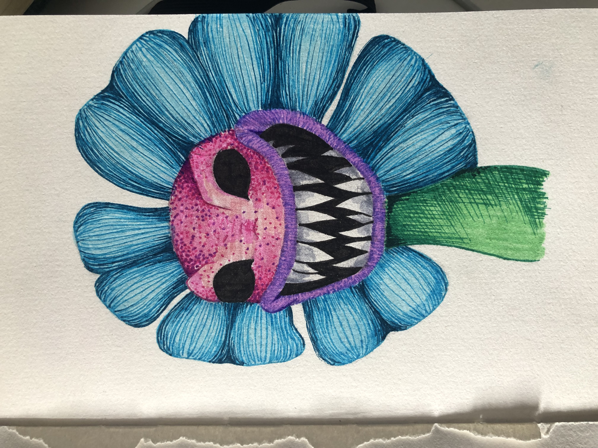
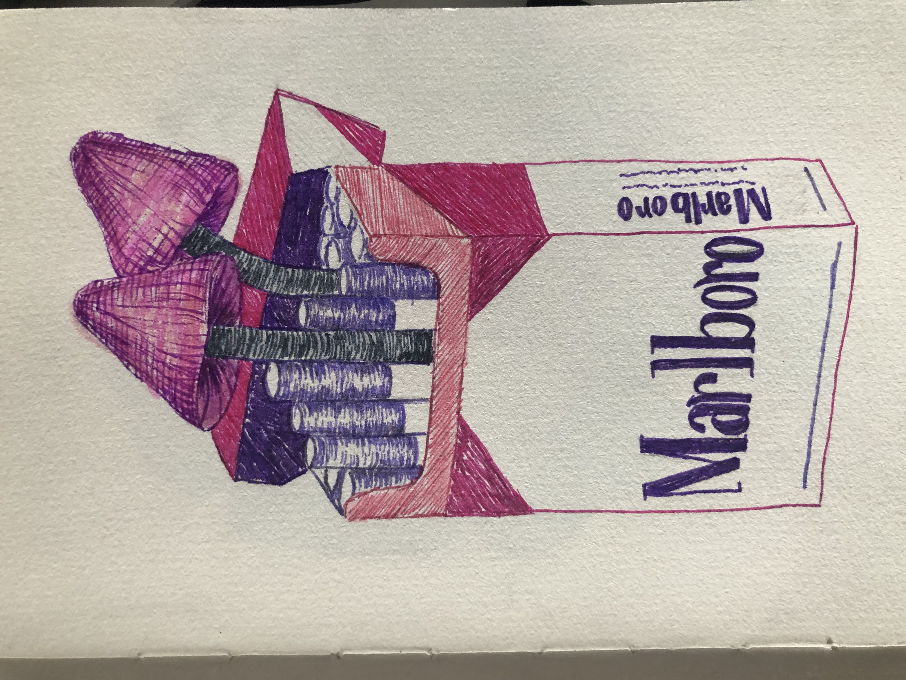
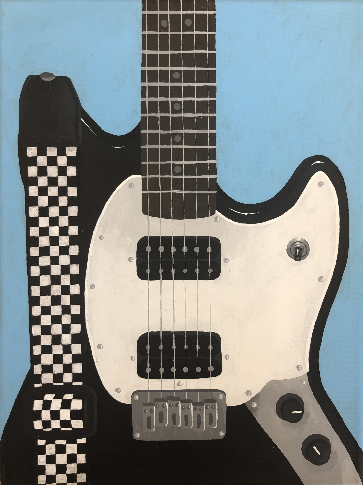

Drawings



The thing I enjoy most at the moment is making drawings with markers and fineliners. With these art supplies I can quickly make a drawing in my sketchbook. I can also easily take them anywhere, not like with paint. Click below for more of my drawings!
DrawingsPaintings


I have been painting since I can remember. My parents have kept all my paintings from the past and I still enjoy looking at them. Of course I've gotten better, so I like seeing the progress. I've been doing it less lately, because it takes a lot of time. Click below for more of my paintings!
Paintings and Make-up